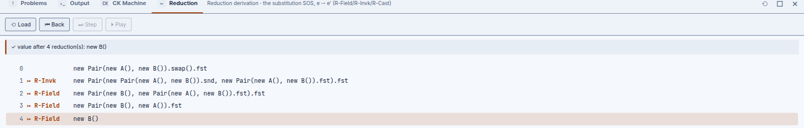

Two evaluators that have to agree
A program in BFJ is evaluated by reducing one entry expression to a value
— a fully-applied constructor call, new C(v̄), with no heap and no
mutation anywhere. What makes the chapter interesting is that BFJ computes that reduction
twice, by two separately-implemented methods, and tests that they never disagree.
Substitution reduction
fjSubstitution.ts is the definition of record: a small-step
structural operational semantics over three computation rules — R-Field,
R-Invk, R-Cast — plus the congruence rules (RC-*)
that push reduction into sub-expressions. Evaluation order is strict, left to right: the
receiver reduces before the method name resolves, and arguments reduce left to right before the
call itself fires.
Capture-avoidance, the usual headache in a substitution semantics, is vacuous here: FJ has no
binders beyond this and a method's parameters, and both are always substituted
simultaneously and closed. There is nothing left to accidentally capture.
The Reduction tab in the bottom dock precomputes the whole trace on Load, then lets Step/Back/Play move a cursor through it. Loading Pair · swap and building it produces this trace:
0 new Pair(new A(), new B()).swap().fst
1 ↦ R-Invk new Pair(new Pair(new A(), new B()).snd, new Pair(new A(), new B()).fst).fst
2 ↦ R-Field new Pair(new B(), new Pair(new A(), new B()).fst).fst
3 ↦ R-Field new Pair(new B(), new A()).fst
4 ↦ R-Field new B()swap() fires first under R-Invk, substituting the receiver into a fresh
Pair with its fields exchanged; the two remaining steps are R-Field
reading .fst down through that fresh pair to the value underneath. Four lines,
three rule firings, one value — and every line is a literal block tree, not a text
rendering of one.

The CK machine
fjMachine.ts is a CK abstract machine: control-and-kontinuation
pairs ⟨e, κ⟩, with an explicit Frame grammar —
◻.f, ◻.m(ē), v.m(v̄,◻,ē),
new C(v̄,◻,ē), (C)◻ — and every transition
individually observable, including the administrative frame push/pop steps the substitution
trace never names.

| Column | Holds |
|---|---|
| Control | The expression currently in focus, e |
| Control-recomposed | plug(e, κ) — the focus dropped back into its
kontinuation, so you can see the whole term the machine is really working on
|
| Kontinuation | The pending frames, innermost first, each a literal ◻-hole expression |
On Pair · swap, Step reports each transition's name and whether it was
salient — an R-* rule actually firing — or purely
administrative: stepping through invk-fire-0 then field-fire reaches
the same new B() the substitution trace does, just with more transitions counted
along the way.
Unlike B-MJ's CESK machine, BFJ's CK machine has no Store. MiniJava has mutable objects on a heap, so its machine needs somewhere to put them; FJ has no assignment and no mutation at all, so there is nothing to store, and the letter is simply absent rather than present-but-empty.
Why they agree
The substitution semantics is the definition; the CK machine is a derived artifact, not an independent re-implementation guessed at separately — but derived does not mean untested. A dedicated lockstep test suite cross-checks that every salient transition the machine fires corresponds to exactly the rule the substitution trace names, for every shipped example. Both views share identical Load / Step / Back / Play controls for exactly this reason: stepping one alongside the other is how you would notice a disagreement if the suite ever missed one.
Stuck-but-safe casts
A failing cast is not a bug in either semantics — it is a first-class, non-crashing outcome. Load and run the Stupid cast example and the Output tab reports:
ClassCastException: B ⋠ AThat is exactly FJ's own progress theorem doing its job: a well-typed FJ program either reduces
to a value or is a stuck cast — never stuck for any other reason. Both steppers and Run
treat a failing T-SCast/T-DCast the same way: they stop cleanly and
report which class failed to match which, rather than treating the mismatch as an internal
error. This is also why the Problems tab reports a stupid cast
as a warning rather than a type error — the type system already knows this outcome is
possible and permitted, it is just telling you where.